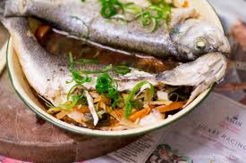

Steamed River Bass
Healthy and easy to make.
Good for family feast - said me
List of Ingredients
- River bass
- Oyster source
- Spring onion
- Ginger
- Vegetable oil
Steps
- Steam the fish for about 8 minutes
- Finely slice the sprint onion and ginger
- Heat the oil
- Place the sprint onion and ginger on top of the steamed fish
- Sprinkle oyster source on top
- Pour hot oil all over the fish, toppings, and source
- Enjoy